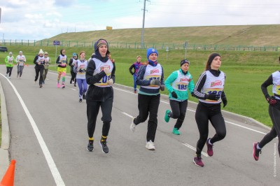
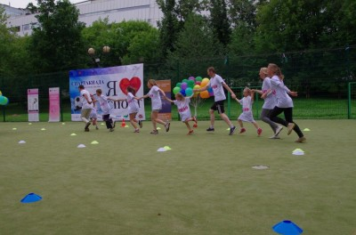

Городской марафон 2026
15 мая 2026 · Москва, Центральный парк
Вид спорта: бег · Осталось мест: 42
РегистрацияБолее 100 событий в этом году
Выбирайте спортивные события, регистрируйтесь онлайн и управляйте заявками в личном кабинете.
Найти событие Открыть кабинетКалендарь стартов по бегу, лыжам и велоспорту.

15 мая 2026 · Москва, Центральный парк
Вид спорта: бег · Осталось мест: 42
Регистрация
22 июня 2026 · Санкт-Петербург, Приморская набережная
Вид спорта: велоспорт · Осталось мест: 126
Регистрация
24 мая 2026 · Вологодская область, Кирики-Улита
Вид спорта: лыжи · Осталось мест: 8
РегистрацияВасильев Дмитрий · Мужчина · 49 лет · fendervik@gmail.com
Спортивная страховка прикрепляется к заявкам автоматически.
Родитель может добавить детские профили и быстро зарегистрировать ребенка на старт.
В деталях оплаченного заказа доступна передача слота по email нового участника.
Более 6000 спортсменов вышли на старт крупнейшего городского события сезона.